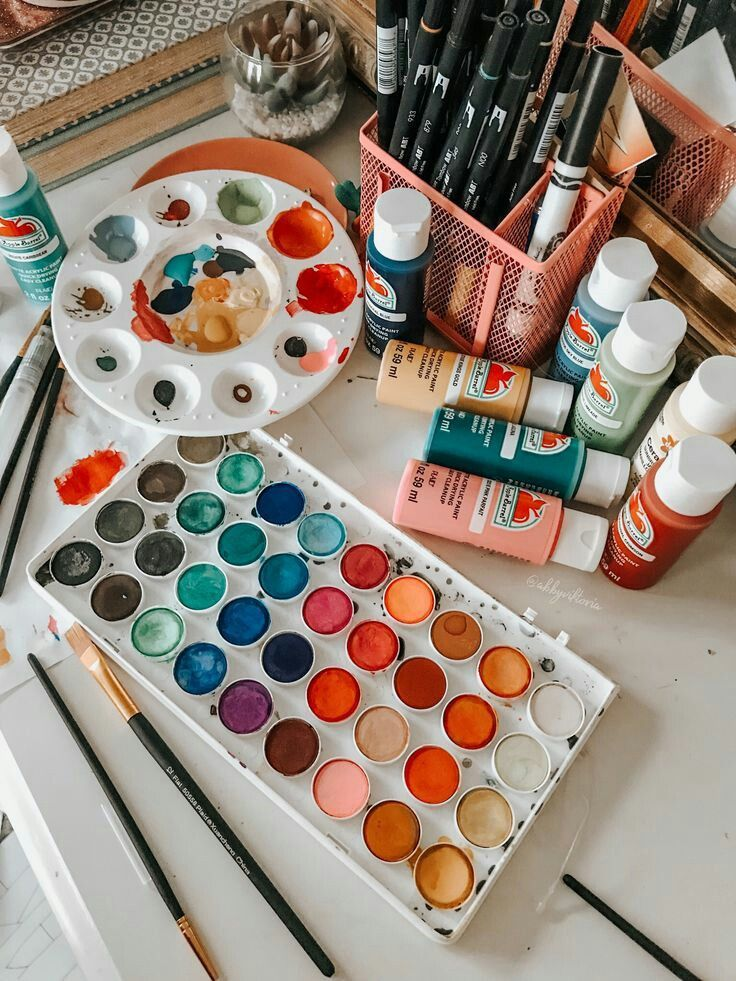
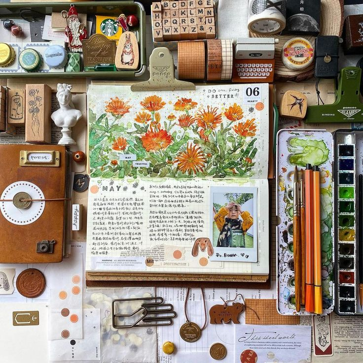

Some of the ways I like to destress and capture the moments of what I find beautiful are through painting and drawing pictures. If you were to ask anyone at home who had the most artsy era or does art the most, they would say me. It just takes one look into my room to tell that I'm a bit artsy. Of course, I'm not good at it in the slightest, but I very much enjoy it. My room, for example, is filled with shelves that store canvases, paint bottles, stickers, string, paper, paintbrushes, sketchbooks, etc. I do this about 50% of the time.

Another way I like to distress and interact with people and my surroundings is through journaling. This is something that I started doing daily recently. Although this may be fairly new, I find myself doing it almost 75% of the time. In fact, me and my friends started a group journal filled with memories of events, occasions, pictures, entries, drawings, samples, etc. Each taking turns filling in a page of something exciting or sad that has happened in our lives. We are planning to gather at the end of the year to share and relive those memories!